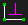
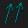

s40723222 網際內容管理系統
Home
Site Map
reveal
blog
Weeks
Weeks 2~5
Weeks 6~9
Weeks 10~14
Weeks 15~18
Note
About
Develop
Weeks 15~18 <<
Previous
Next
>> About
Note
Solvespace 快捷鍵
D
長度設定
N
角度設定
H
水平限制
(左右疊合)
V
垂直限制
(上下疊合)
L
平行限制
(無交角)

[
垂直限制
(90°)
O
重疊
(點在線上)
Y
對稱中心點
Q
等長限制

X
物件平行
U
其他輔助角
E
切換參考尺寸
week18
Weeks 15~18 <<
Previous
Next
>> About
Copyright © All rights reserved | This template is made with
by
Colorlib